Lab 2: Inertial Measurement Unit
Setup
To start, I connected the IMU to the Artemis using a QWIIC cable, then connected the Artemis to my computer. I had the Sparkfun 9DoF IMU library installed already.
The AD0 pin on an I2C slave device (such as the IMU used in this lab) allows the user to change the slave address.
In Example1_Basics.ino, AD0_VAL should be set to 1, since the ADR jumper is open.
Additionally, I used a for loop inside setup so the LED blinks indicating startup.
* I used code from Lecture4-IMU.ino in converting accelerometer data to useable data for the following tasks. *
Accelerometer
Task 1: Getting roll and pitch data
Below is the arduino code taken from Lecture4-IMU.ino to convert roll and pitch data from the accelerometer in degrees.
As I rotate the accelerometer using the desk as reference (at -90˚, 0˚, 90˚), the serial monitor displays the similar numbers as the roll and pitch angle measured. The measurements closely matches the physical orientation of the accelerometer, verifying the code.
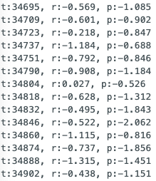After collecting data of the acceleromoter sitting flat on the desk, I noticed the data was slightly off, and that calibration was needed. I used the following method from this post on adafruit's website to perform a two-point calibration.
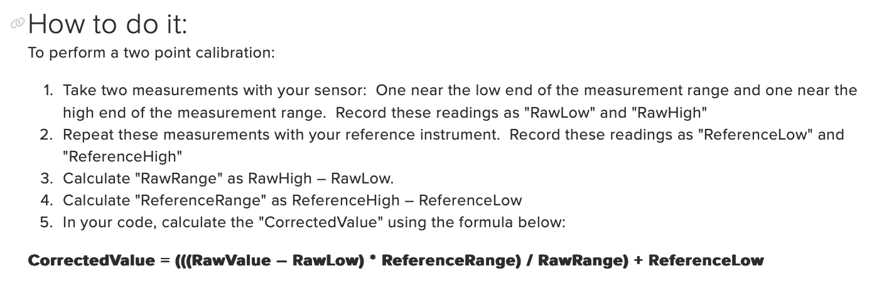My ReferenceLow, ReferenceHigh, and ReferenceRange would be -90˚, 0˚, 90˚ respectively.
Roll measurements using the accelerometer showed RawLow, RawHigh, and RawRange as -90.603, 91.257, 181.86.
Pitch measurements using the accelerometer showed RawLow, RawHighr, and RawRange as -91.12, 89.665, 180.785. Therefore,
Roll calibration: (((Raw Value - (-90.603)) * 180) / 181.86) + (-90)
Pitch calibration: (((Raw Value - (-91.12)) * 180) / 180.785) + (-90)
Tasks 2 & 3: Analyzing Noise Using Fourier Transform
The roll and pitch plots show some noticeable peaks and drops indicating noisy data, so I collected data and performed FFT in order to analyze the noise.
Initially, I placed the accelerometer flat on the desk, but the only prominent peak at 0 Hz gave no meaningful analysis.
Moving the accelerometer around to vary both roll and yaw, I was able to obtain more useful results.
The plots below each show the raw roll data from the accelerometer, and the corresponding FFT analysis.
Similarlly, the plots below each show the raw pitch data from the accelerometer, and FFT performed on the data. 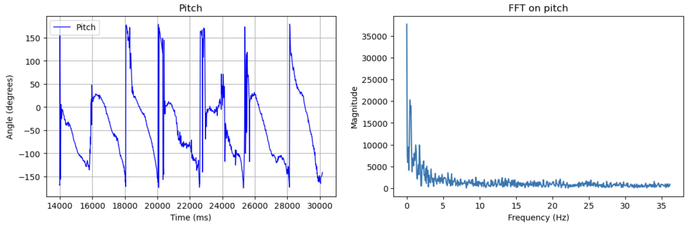
Task 4: Low Pass Filter
To reduce noise, I implemented a low pass filter.
I chose a cutoff frequency of 5 Hz as significant peaks were shown between 1 - 5 Hz for both roll and pitch in the FFT plots.
I calculated α = 0.3 using the equation provided in lectrure, where T = 72.43 from sampling rate, and RC = 0.0318 using 5 Hz as cutoff frequency.
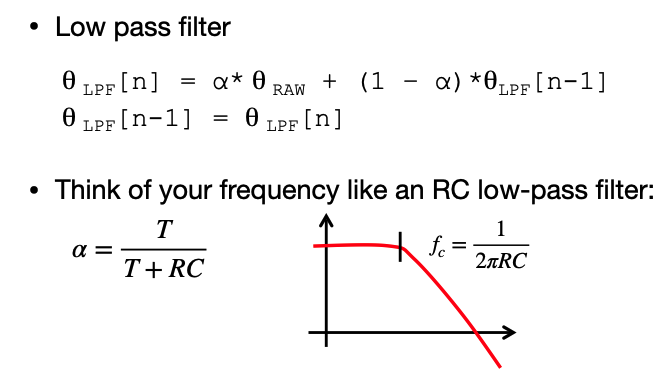The two images below show raw and filtered roll and pitch plots for α = 0.1, with their corresponding FFT plot. The red line, representing the filtered data, is much smoother and eliminates prominent peaks in raw data. It can also be seen in the FFT plot that the magnitude of higher frequency data is much smaller than that of lower frequency data.
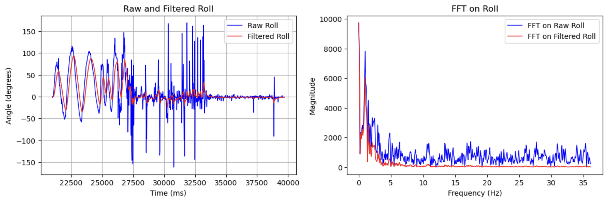 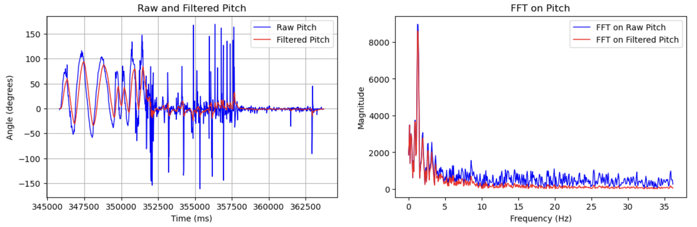Gyroscope
Task 1: Getting roll, pitch, and yaw data
Below are roll, pitch, and yaw plots from the gyroscope while I moved it around randomly, without any filtering of data. From the high absolute values, we can see drifting occuring.
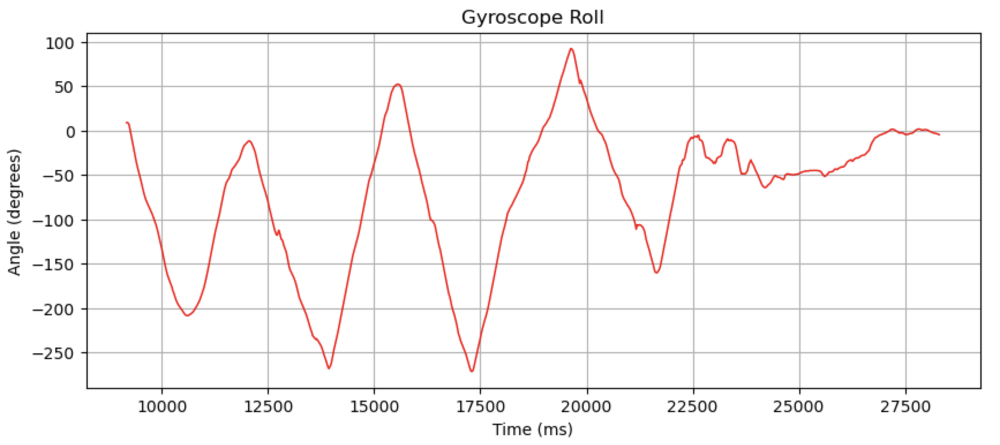 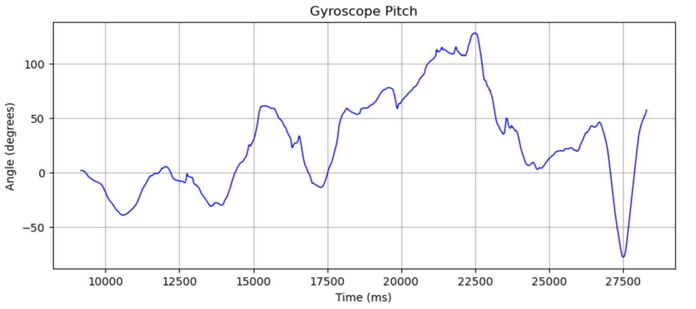 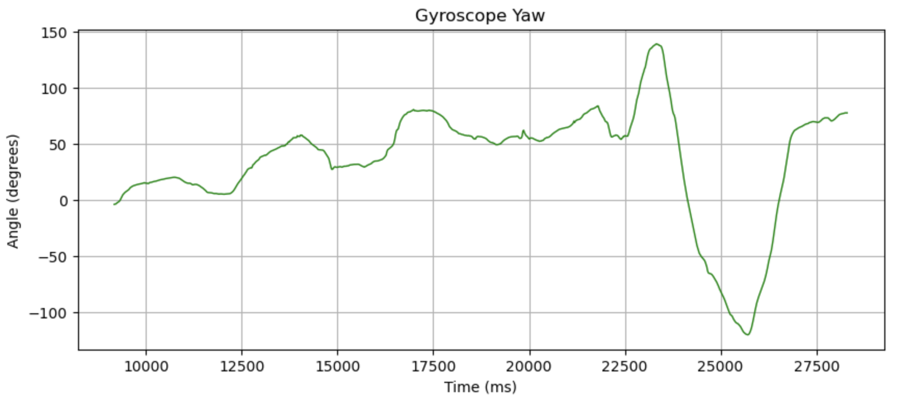Below are videos of the serial plotter, comparing the data from the gyroscope and the accelerometer. It is much more obvious in the comparison that raw gyroscope data has much less noise than accelerometer data but tends to drift over time.
Task 2: Complementary Filter
To mitigate this error in gyroscope data due to drifting, I implemented a complementary filter using the equation provided in class. I chose α = 0.8, placing more weight on accelerometer data. Despite some noise in the data, the accelorometer provided good overall accuracy when measured against reference points such as a wall or a desk. Below is the equation from lecture, and a snippet of the code I used for processing roll data.
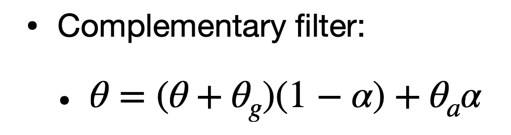The plot below shows raw gyroscope roll data in blue, complementary roll data in red, and low-pass filtered accelerometer roll data in green while I rocked the IMU about the x-axis. The complementary data follows the raw gyroscope roll data trend quite closely while reducing noise from the accelerometer, as well as correcting drift using accelerometer data.
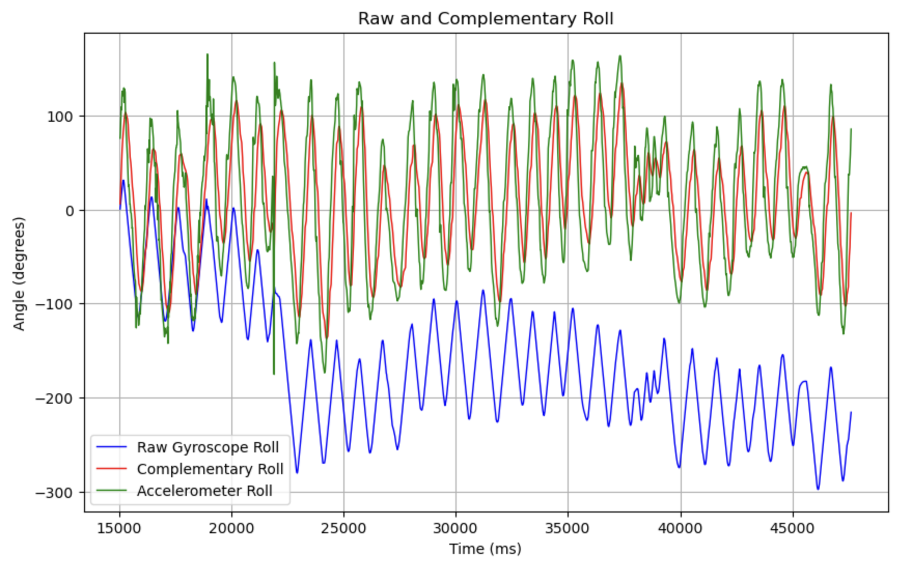Similarly, the plot below shows raw gyroscope pitch data in blue, complementary pitch data in red, and low-pass filtered accelerometer pitch data in green while I rocked the IMU about the y axis. Again, the complementary data follows the raw gyroscope pitch data trend quite closely, and gets rid of noise from the accelerometer as well as correcting drift using accelorometer data.
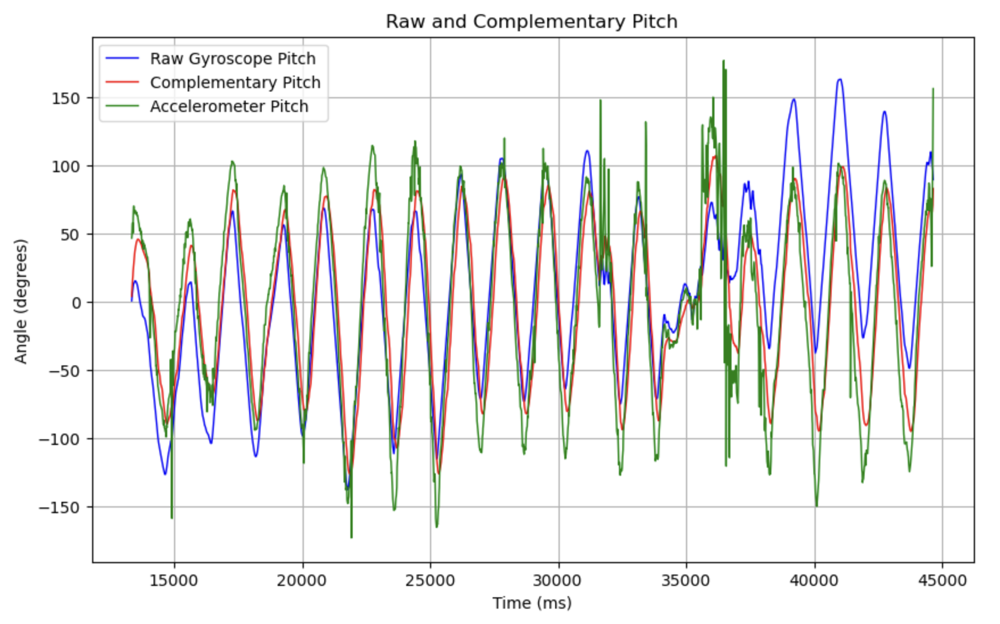Sampling Data
Tasks 1, 2, 3: Code to speed up loop execution
To speed up main loop execution, I deleted all unnecessary print commands and delays, only leaving code to append the time-stamped IMU data to arrays I created for each data type. This enabled me to send 2000 strings containing 8 different datapoints (time, filtered accelerometer roll and pitch, raw and filtered gyroscope roll and pitch, and raw gyroscope yaw) in 5900 ms, meaning it took 2.95 ms per sample. Since a float is 4 bytes and each string contains 32 bytes with 8 arrays. As the Artemis has 384 kB of RAM, meaning it can collect data for up to 35.4 seconds assuming we use all 384 kB.
Task 4: Collecting data for 5 seconds
The plot below shows all the data collected for this lab in the same figure. The x-axis shows all the data was collected for more than 5 seconds.
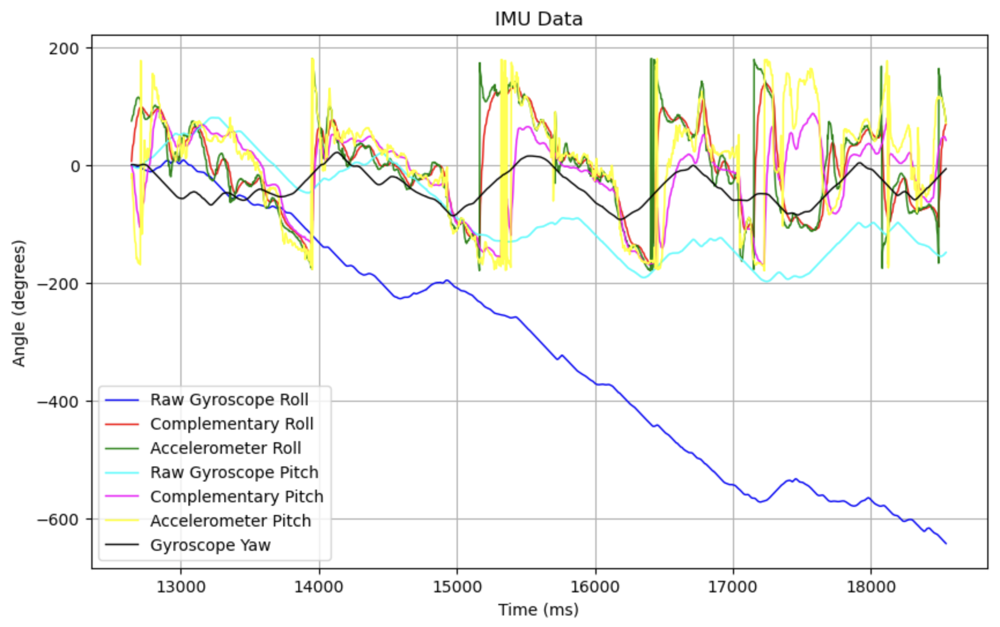I had a lot of trouble getting this plot to work, it turns out I was missing a bracket that completed my for loop...
Stunts
Below are videos of some stunts I tried. It was surprisingly hard to get the car to turn a corner, and I could see that the car doesn't always drive straight even if there were no obstacles in the path. I saw quickly reversing the direction of the car made it flip, and spinning it often caused the car to roll over on its side.
Discussion
This lab not only helped me really understand how gyroscopes and accelorometers work and what filters are used to mitigate for the inherent error in these sensors, but also how to debug code when I run into a problem. I had to add a lot of print lines to see what might have gone wrong with my code, and also check if I made any silly mistakes, such places where I instantiate variables so that they update correctly.
References and Acknowledgements
- Evan Leong, Jeffery Cai, Steven Sun for being a personal TA for a lost mechE student, despite being students themselves
- Jeffery and Steven again for helping me immensely with the complementary filter implementation
- Jeffery for filming me trying to drive the car
- Lecture slides and code
- Farrell for answering my questions
- Nila Narayan's website
- Adafruit forum for two point callibration
- ChatGPT for correcting grammar and spelling errors
- Bootstrap template for website
Oops
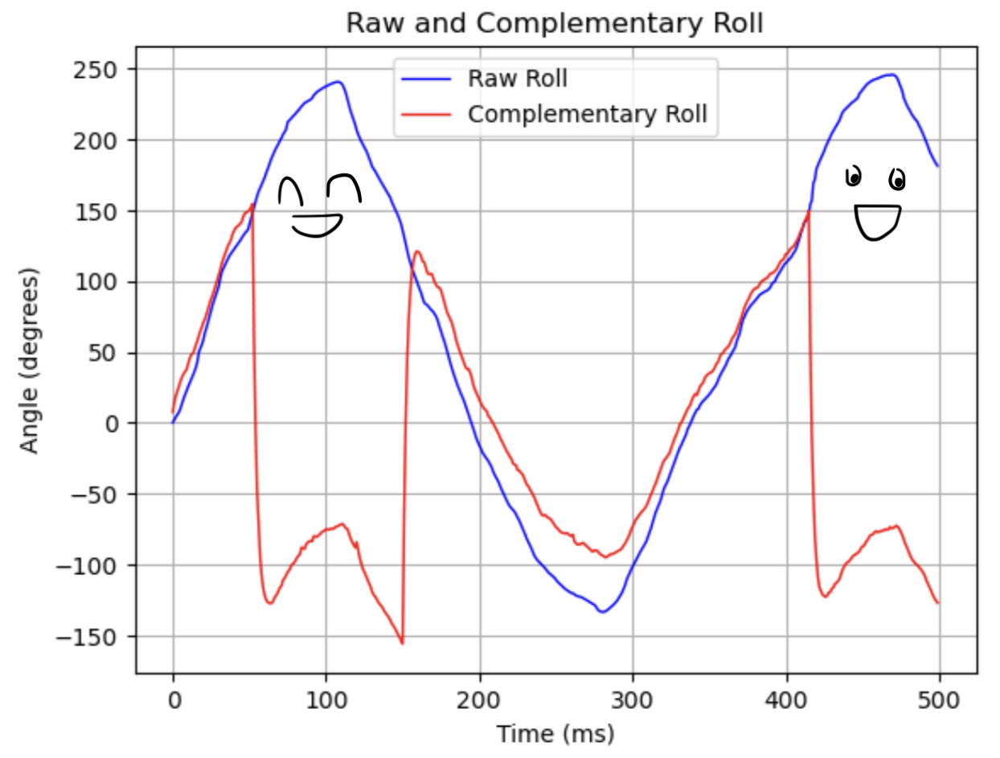Incredibly incorrect gyroscope data that looked like two people holding hands